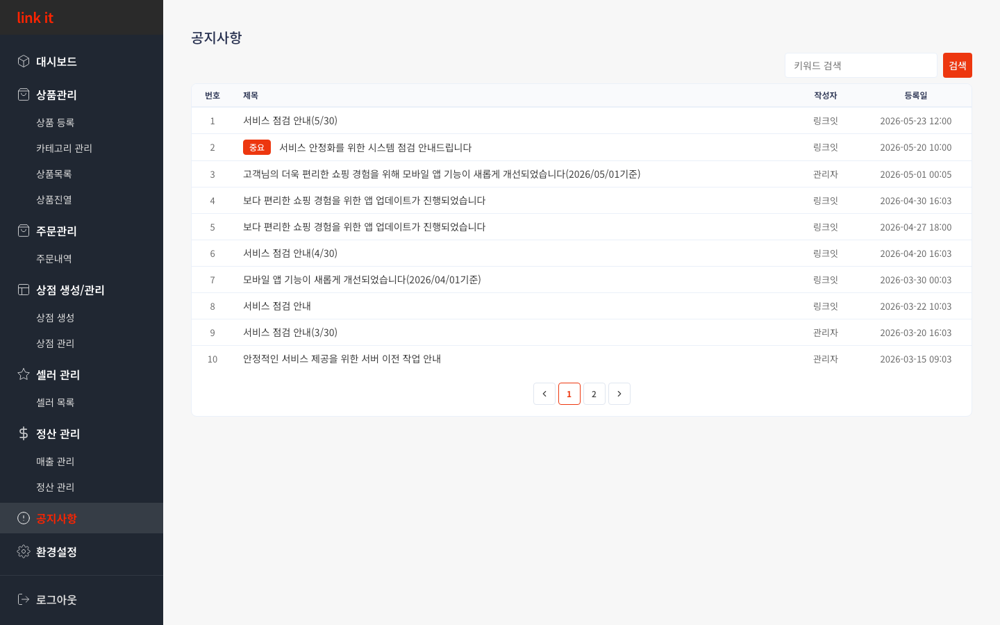

CHAPTER 7
공지사항
플랫폼 공지 · 업데이트 안내
7
공지사항 조회
운영자가 등록한 서비스 점검·업데이트·안내 공지를 확인합니다. 키워드 검색으로 필요한 공지를 빠르게 찾을 수 있습니다.

1
2
3
사용 방법
1
키워드 검색으로 공지 조회
오른쪽 상단 검색창에 키워드를 입력하고 [검색]을 클릭합니다. 제목에 해당 키워드가 포함된 공지만 필터링됩니다.
2
[중요] 배지 공지 우선 확인
빨간 [중요] 배지가 붙은 공지는 서비스 점검·긴급 안내 등 즉시 확인이 필요한 내용입니다. 제목을 클릭하면 상세 내용을 볼 수 있습니다.
3
페이지네이션으로 이전 공지 탐색
하단 페이지 번호나 이전/다음(〈 〉) 버튼으로 과거 공지를 탐색할 수 있습니다.
💡 대시보드
에도 최신 공지 5건이 미리보기로 표시됩니다.
←
이전 챕터
6. 정산관리
CHAPTER 7 / 8
다음 챕터
8. 환경설정
→